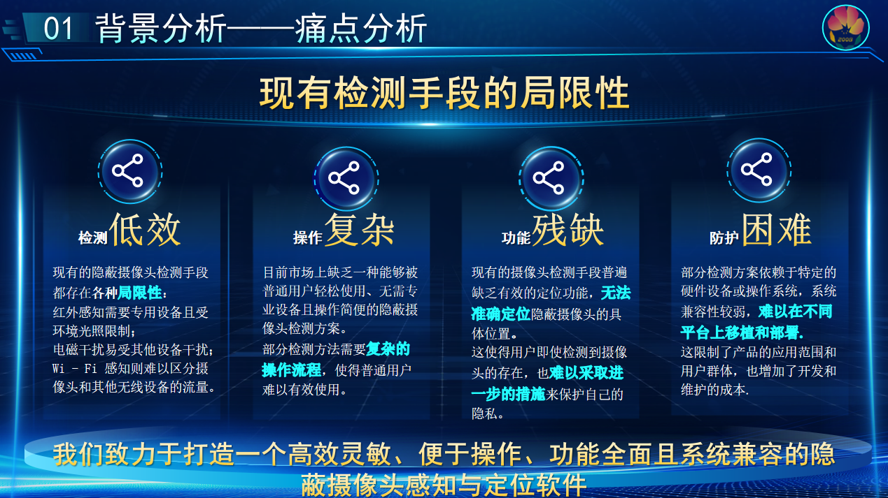

CamDetector——一个基于无线网络流量分析的摄像头检测方案
第18届中国大学生计算机设计大赛 大数据应用-大数据实践赛 作品

项目立足方向
本作品聚焦于 智慧安防、智能社区、智能家居 等国家重点技术发展方向，紧贴“个人隐私保护”和“安全空间建设”两大核心诉求，应用于酒店民宿偷拍防范、办公区域泄密监测、公共空间隐私巡查等多类场景，致力于构建全民可用、无设备依赖、实时高效的智能摄像头感知防护体系。
项目背景
近年来，隐蔽摄像头滥用问题日益严峻：
 • 偷拍事件频发，部分电商平台甚至公开售卖隐蔽摄像头；
• 偷拍事件频发，部分电商平台甚至公开售卖隐蔽摄像头；
• 公众对隐私安全防范意识薄弱，仅21%的住客会主动检查房间；
• 传统检测手段依赖硬件、误报率高、操作复杂，难以普及。
与此同时，国家政策持续加码隐私安全立法：
 •《民法典》正式将偷拍纳入侵权范畴；
•《民法典》正式将偷拍纳入侵权范畴；
• 个人信息保护法、生物识别安全规范等法规密集出台；
• 市场与法规共同推动智能隐私防护技术快速落地。
当前难点与挑战
我们调研并归纳出目前隐蔽摄像头防护领域的四大核心痛点：
| 现有方式 | 技术局限 | 用户痛点 |
|---|---|---|
| 红外检测 | 需夜视环境、遮挡易失效 | 不适用于日常环境 |
| 电磁检测 | 家电干扰大、误报率高 | 使用门槛高 |
| Wi-Fi嗅探 | 无法区分设备类型 | 检测结果不明确 |
| 摄像头反光检查 | 主观性强 | 效率低，无法定位 |

此外：
• 多设备并存的复杂无线环境下，现有方法准确性不足；
• 主流APP无法对摄像头进行有效追踪和精确定位；
• 用户缺乏使用门槛低、实时性强的解决方案。
我们的解决方案：CamDetector
为应对上述问题，我们提出了创新性的解决方案——CamDetector：基于Wi-Fi流量分析的摄像头检测与定位系统：
一、系统架构

三层架构详解

数据感知层
• 核心技术：基于Libpcap+Aircrack-ng双引擎抓包，支持802.11协议解析五级过滤流水线（CRC校验/MAC白名单等）
• 输出：清洗后的结构化数据流
数据处理层
| 模块 | 技术实现 | 性能指标 |
|---|---|---|
| 感知模块 | PLD特征分析（CDF量化） 带宽稳定性检测（滑动窗口算法） |
准确率 96.7% 误报率 < 3% |
| 定位模块 | 比特率-距离模型：d = 0.0023 ΔB² + 0.15 ΔB + 1.2方向估计（SNR 空间梯度） |
定位误差 < 0.5m @ 3m |
应用交互层
• 动态引导：通过三色雷达图实时显示威胁方位（红=视野内，黄=邻近，绿=安全）
• 语音提示："检测到右前方2.3米存在摄像头"（支持多语言切换）
二、核心功能
智能感知：
• 无需解密内容，通过分析加密视频流的PLD分布特征和带宽稳定性，精准判断摄像头流量；
• 使用轻量化SVM分类器，对流量进行快速分类，准确率达96.7%。

精准定位：
• 基于用户移动引发的比特率变化，推断其是否进入摄像头视野；
• 结合传感器数据（加速度+SNR）实现方向与距离联合估计；
• 在3米范围内定位误差小于0.48米，方向误差小于4.2°。

移动端无感部署：
• 仅依赖智能手机本身，无需额外设备；
• 轻量部署，CPU占用<15%，3秒内完成检测反馈；
• 兼容86款主流摄像头，适用于家庭、商用、出行等多场景。
产品创新性

基于流量的摄像头检测
• 创新点：不依赖红外或电磁传感器，完全通过分析网络流量特征（如PLD特征、带宽稳定性等）来检测隐蔽摄像头。
• 优势：摆脱硬件依赖，能适应更多环境场景和设备类型。
基于移动性的摄像头定位
• 创新点：通过人体移动引发的比特率波动，判断摄像头的方向与距离，实现精确定位。
• 优势：为市面上现有产品所缺乏的功能，提升了实际可用性和可操作性。
实现移动端一体化感知与定位
• 创新点：将检测与定位功能集成到智能手机App中，用户无需额外设备。
• 优势：显著提升了使用便利性，具备良好的用户体验与部署推广能力。
市场对比优势（竞品分析）

应用场景与社会价值
• 酒店/民宿隐私检测：住客可自查房间，避免偷拍；
• 办公/会议室安全巡查：规避机密信息泄露；
• 学校/浴室/更衣室等重点区域防护：辅助管理者排查可疑设备；
• 助力政策监管与执法排查：技术可嵌入监管平台，提高执法效率。
作品价值与展望
CamDetector 以轻量化、高准确率、强定位能力为核心优势，真正将隐私防护落地到个人终端，具备广泛的商业拓展前景和社会治理价值，填补了国内外在“加密摄像头检测”与“无设备定位”方面的技术空白，是智慧安防领域的一项重要技术突破。
如何运行我们的项目
这是一个使用 create-next-app 脚手架创建的 Next.js 项目。
🚀 快速开始
首先，运行开发服务器：
npm run dev
或者 yarn dev
或者 pnpm dev
或者 bun dev
然后在浏览器中打开 http://localhost:3000 查看效果。
你可以通过修改 app/page.tsx 文件来开始编辑页面。页面会在你修改后自动更新。
本项目使用 next/font 自动优化并加载 Geist 字体，这是由 Vercel 推出的一款新字体。
📚 了解更多
想进一步了解 Next.js，可以查看以下资源：
- Next.js 官方文档 - 了解 Next.js 的功能与 API。
- Learn Next.js - 一套交互式的 Next.js 教程。
你还可以查看 Next.js 的 GitHub 仓库 —— 欢迎反馈和贡献！
☁️ 在 Vercel 上部署
部署 Next.js 应用最简单的方式是使用由 Next.js 团队创建的 Vercel 平台。
查看我们的 Next.js 部署文档 了解更多详情。